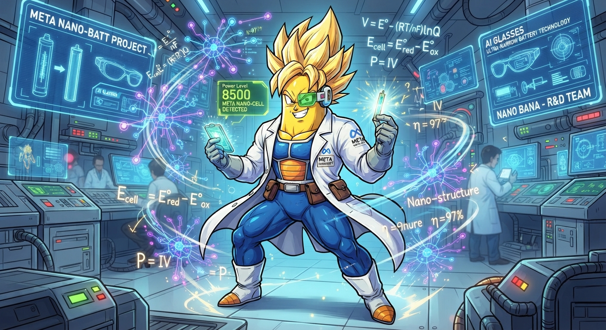

Último Post
A Engenharia do Invisível: Como a Meta Redefiniu o Armazenamento de Energia para a Próxima Era da IA Vestível
A busca pelo "Santo Graal" da computação espacial e dos assistentes de Inteligência Artificial de uso contínuo não é apenas um desafio de software ou de algoritmos de redes neurais....